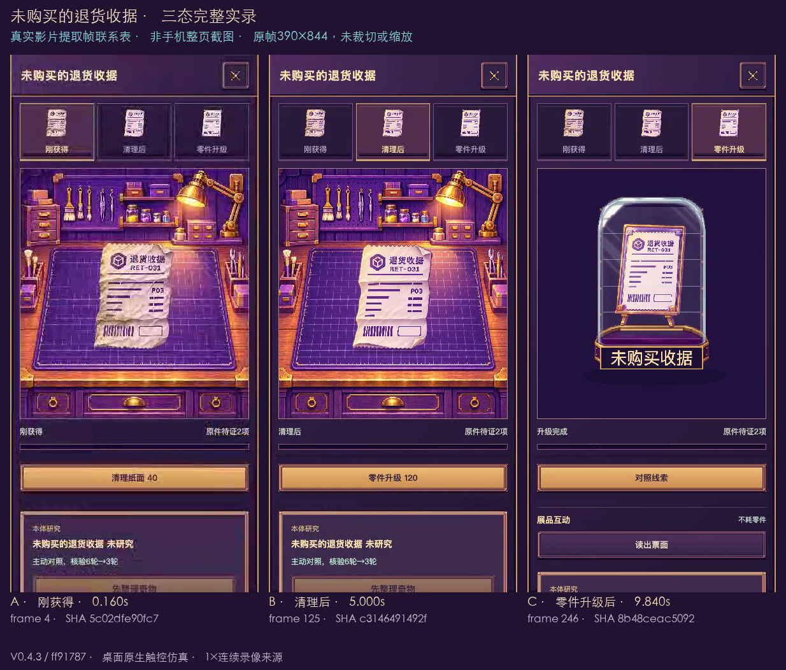
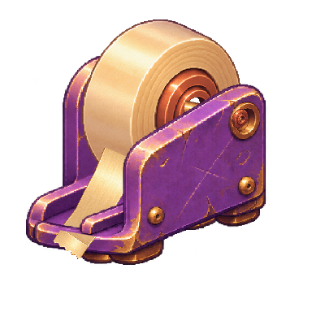
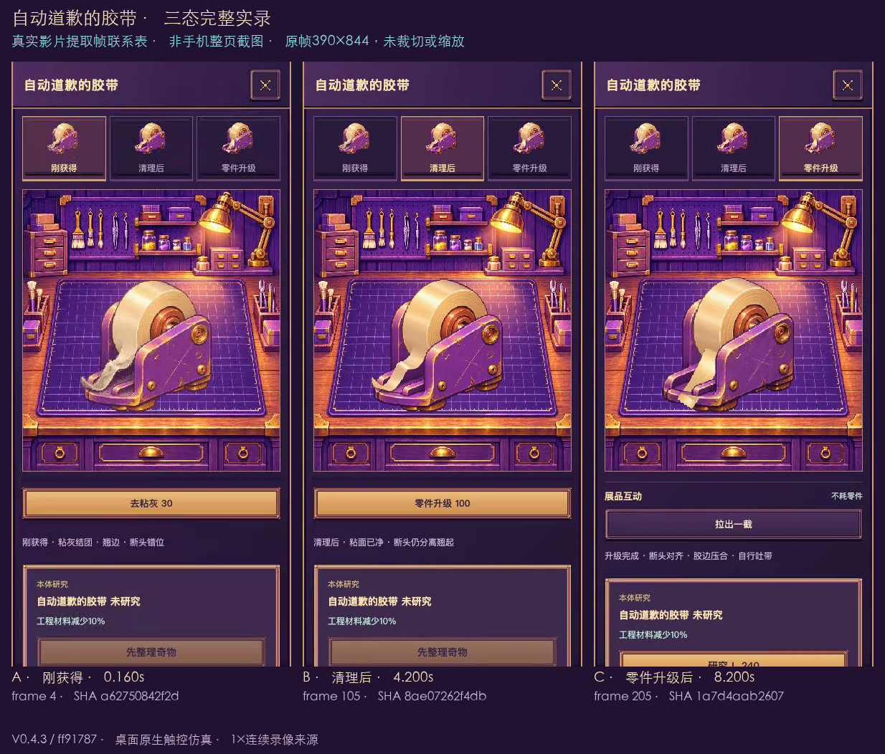
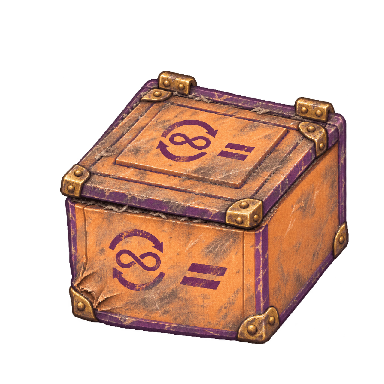

六件奇物 · 三张完整状态图 · V0.4.3
内部视觉审核：已完成实录抽帧与三态整图复核，可提交复测。用户最终视觉审核：待确认。真实手机：未测。
本页来自固定包的桌面移动尺寸触控仿真与真实连续录像，工程检查完成不代表美术验收。
运行源码 ff917872227b0f28a452dee1642d9cc8606251db
ZIP SHA256 2c37adfcd286cf1b1ba8af05bb7b52127d5cdda126f0b3fa098e812d825893f1
继续 loststar.fusion.firstplanet.v037 当前档。
刚获得 → 清理后 → 零件升级后：每态读取一张完整PNG/WebP画面，一次完整绘制；不分片、不用旧渐变清污或拼片动画生成下一态。处理中保留前图，真实条件提交后才换图；进度条沿用原工作时间。
原费用、存档、已购能力与展柜权益继续；C不增加额外收费或等级。18张源图中13张为本轮生成的完整图，5张C原字节复用已确认完整图以保留主动互动一致性；不声称全部重新生成。批准概念原图仍作为原始参考来源。
三态制作与来源说明 · 批准原始概念PNG · 18态正式导出登记
本轮144项原始图像记录、90份完整PNG导出、7段自然1倍录像；下列7张联系表由24张原生影片帧组成。联系表中的原帧未裁切、缩放或补画，标题与说明位于帧外。每张原帧的原片、实际帧序号、时间和SHA
六件三态与实际处理
每组三张透明图均选自Chromium 390的实际materialSnapshot完整导出。点击图片可打开原尺寸；折叠组中保留处理页面和已升级物件的只读放大对照。
未购买的退货收据 · 三态／自然处理／只读放大
 A · 刚获得 · 实际完整384 PNG导出
A · 刚获得 · 实际完整384 PNG导出 B · 清理后 · 实际完整384 PNG导出C · 零件升级后 · 实际完整384 PNG导出
B · 清理后 · 实际完整384 PNG导出C · 零件升级后 · 实际完整384 PNG导出原清理／零件升级报价：40 + 120 = 160；实际账本扣款 160。已购权益不变。
未购买的退货收据 · 10.36秒 · 原生1倍连续录像
A/B/C真实视频提取帧联系表，非手机整页截图 处理前／处理期间／完成后的实际页面（5张）
已升级玩家的只读 A/B/C 放大（3张，不改变当前C状态）
自动道歉的胶带 · 三态／自然处理／只读放大
 A · 刚获得 · 实际完整384 PNG导出
A · 刚获得 · 实际完整384 PNG导出 B · 清理后 · 实际完整384 PNG导出
B · 清理后 · 实际完整384 PNG导出
C · 零件升级后 · 实际完整384 PNG导出原清理／零件升级报价：30 + 100 = 130；实际账本扣款 130。已购权益不变。
自动道歉的胶带 · 8.74秒 · 原生1倍连续录像
A/B/C真实视频提取帧联系表，非手机整页截图 处理前／处理期间／完成后的实际页面（5张）
已升级玩家的只读 A/B/C 放大（3张，不改变当前C状态）
无限套娃包裹 · 三态／自然处理／只读放大

A · 刚获得 · 实际完整384 PNG导出 B · 清理后 · 实际完整384 PNG导出
B · 清理后 · 实际完整384 PNG导出 C · 零件升级后 · 实际完整384 PNG导出
C · 零件升级后 · 实际完整384 PNG导出原清理／零件升级报价：50 + 140 = 190；实际账本扣款 190。已购权益不变。
处理前／处理期间／完成后的实际页面（5张）
已升级玩家的只读 A/B/C 放大（3张，不改变当前C状态）
昨日邮戳 · 三态／自然处理／只读放大
 A · 刚获得 · 实际完整384 PNG导出
A · 刚获得 · 实际完整384 PNG导出 B · 清理后 · 实际完整384 PNG导出
B · 清理后 · 实际完整384 PNG导出 C · 零件升级后 · 实际完整384 PNG导出
C · 零件升级后 · 实际完整384 PNG导出原清理／零件升级报价：45 + 180 = 225；实际账本扣款 225。已购权益不变。
处理前／处理期间／完成后的实际页面（5张）
已升级玩家的只读 A/B/C 放大（3张，不改变当前C状态）
收件人：宇宙 · 三态／自然处理／只读放大
 A · 刚获得 · 实际完整384 PNG导出
A · 刚获得 · 实际完整384 PNG导出 B · 清理后 · 实际完整384 PNG导出
B · 清理后 · 实际完整384 PNG导出 C · 零件升级后 · 实际完整384 PNG导出
C · 零件升级后 · 实际完整384 PNG导出原清理／零件升级报价：60 + 220 = 280；实际账本扣款 280。已购权益不变。
处理前／处理期间／完成后的实际页面（5张）
已升级玩家的只读 A/B/C 放大（3张，不改变当前C状态）
无人签收铃 · 三态／自然处理／只读放大
 A · 刚获得 · 实际完整384 PNG导出
A · 刚获得 · 实际完整384 PNG导出 B · 清理后 · 实际完整384 PNG导出
B · 清理后 · 实际完整384 PNG导出 C · 零件升级后 · 实际完整384 PNG导出
C · 零件升级后 · 实际完整384 PNG导出原清理／零件升级报价：35 + 120 = 155；实际账本扣款 155。已购权益不变。
处理前／处理期间／完成后的实际页面（5张）
已升级玩家的只读 A/B/C 放大（3张，不改变当前C状态）
同一房间与收藏页
Chromium360／390和WebKit390：基地与收藏整页（6张）
chromium 360×800 · 基地实际整页chromium 360×800 · 收藏实际整页chromium 390×844 · 基地实际整页chromium 390×844 · 收藏实际整页webkit 390×844 · 基地实际整页webkit 390×844 · 收藏实际整页 100秒收藏室 · 保留真实开柜取放动作
收藏室六柜真实观察、开柜、取放与返回 · 100.00秒 · 原生1倍连续录像100秒实录中六次inspect原生影片帧，非手机整页截图 六件目标齐备；最小身体通道 6，最大手部距离 64.402。这些测量不代替视觉审核。
收藏室实际处理阶段与柜体原生裁片（36张）
museum-all-3-bell-walk · 实际390×844页面museum-all-3-bell-extend-tray · 实际390×844页面museum-all-3-bell-grip · 实际390×844页面museum-all-3-bell-inspect · 实际390×844页面museum-all-3-bell-close · 实际390×844页面museum-all-3-receipt-walk · 实际390×844页面museum-all-3-receipt-extend-tray · 实际390×844页面museum-all-3-receipt-grip · 实际390×844页面museum-all-3-receipt-inspect · 实际390×844页面museum-all-3-receipt-close · 实际390×844页面museum-all-3-cosmic-parcel-walk · 实际390×844页面museum-all-3-cosmic-parcel-extend-tray · 实际390×844页面museum-all-3-cosmic-parcel-grip · 实际390×844页面museum-all-3-cosmic-parcel-inspect · 实际390×844页面museum-all-3-cosmic-parcel-close · 实际390×844页面museum-all-3-nested-walk · 实际390×844页面museum-all-3-nested-extend-tray · 实际390×844页面museum-all-3-nested-grip · 实际390×844页面museum-all-3-nested-inspect · 实际390×844页面museum-all-3-nested-close · 实际390×844页面museum-all-3-stamp-walk · 实际390×844页面museum-all-3-stamp-extend-tray · 实际390×844页面museum-all-3-stamp-grip · 实际390×844页面museum-all-3-stamp-inspect · 实际390×844页面museum-all-3-stamp-close · 实际390×844页面museum-all-3-tape-walk · 实际390×844页面museum-all-3-tape-extend-tray · 实际390×844页面museum-all-3-tape-grip · 实际390×844页面museum-all-3-tape-inspect · 实际390×844页面museum-all-3-tape-close · 实际390×844页面glass-cabinet-receipt · 原生Canvas局部，非手机整页截图glass-cabinet-tape · 原生Canvas局部，非手机整页截图glass-cabinet-nested · 原生Canvas局部，非手机整页截图glass-cabinet-stamp · 原生Canvas局部，非手机整页截图glass-cabinet-cosmic-parcel · 原生Canvas局部，非手机整页截图glass-cabinet-bell · 原生Canvas局部，非手机整页截图 完整覆盖与原始记录
双引擎／两种尺寸完整三态页面（54张）
chromium-360-receipt-found · 桌面触控仿真实际页面chromium-360-receipt-clean · 桌面触控仿真实际页面chromium-360-receipt-stabilized · 桌面触控仿真实际页面chromium-360-tape-found · 桌面触控仿真实际页面chromium-360-tape-clean · 桌面触控仿真实际页面chromium-360-tape-stabilized · 桌面触控仿真实际页面chromium-360-nested-found · 桌面触控仿真实际页面chromium-360-nested-clean · 桌面触控仿真实际页面chromium-360-nested-stabilized · 桌面触控仿真实际页面chromium-360-stamp-found · 桌面触控仿真实际页面 chromium-360-stamp-clean · 桌面触控仿真实际页面chromium-360-stamp-stabilized · 桌面触控仿真实际页面chromium-360-cosmic-parcel-found · 桌面触控仿真实际页面chromium-360-cosmic-parcel-clean · 桌面触控仿真实际页面chromium-360-cosmic-parcel-stabilized · 桌面触控仿真实际页面chromium-360-bell-found · 桌面触控仿真实际页面chromium-360-bell-clean · 桌面触控仿真实际页面chromium-360-bell-stabilized · 桌面触控仿真实际页面
chromium-360-stamp-clean · 桌面触控仿真实际页面chromium-360-stamp-stabilized · 桌面触控仿真实际页面chromium-360-cosmic-parcel-found · 桌面触控仿真实际页面chromium-360-cosmic-parcel-clean · 桌面触控仿真实际页面chromium-360-cosmic-parcel-stabilized · 桌面触控仿真实际页面chromium-360-bell-found · 桌面触控仿真实际页面chromium-360-bell-clean · 桌面触控仿真实际页面chromium-360-bell-stabilized · 桌面触控仿真实际页面 chromium-390-receipt-found · 桌面触控仿真实际页面
chromium-390-receipt-found · 桌面触控仿真实际页面 chromium-390-receipt-clean · 桌面触控仿真实际页面chromium-390-receipt-stabilized · 桌面触控仿真实际页面
chromium-390-receipt-clean · 桌面触控仿真实际页面chromium-390-receipt-stabilized · 桌面触控仿真实际页面 chromium-390-tape-found · 桌面触控仿真实际页面
chromium-390-tape-found · 桌面触控仿真实际页面 chromium-390-tape-clean · 桌面触控仿真实际页面
chromium-390-tape-clean · 桌面触控仿真实际页面 chromium-390-tape-stabilized · 桌面触控仿真实际页面
chromium-390-tape-stabilized · 桌面触控仿真实际页面 chromium-390-nested-found · 桌面触控仿真实际页面chromium-390-nested-clean · 桌面触控仿真实际页面chromium-390-nested-stabilized · 桌面触控仿真实际页面
chromium-390-nested-found · 桌面触控仿真实际页面chromium-390-nested-clean · 桌面触控仿真实际页面chromium-390-nested-stabilized · 桌面触控仿真实际页面 chromium-390-stamp-found · 桌面触控仿真实际页面chromium-390-stamp-clean · 桌面触控仿真实际页面
chromium-390-stamp-found · 桌面触控仿真实际页面chromium-390-stamp-clean · 桌面触控仿真实际页面 chromium-390-stamp-stabilized · 桌面触控仿真实际页面chromium-390-cosmic-parcel-found · 桌面触控仿真实际页面
chromium-390-stamp-stabilized · 桌面触控仿真实际页面chromium-390-cosmic-parcel-found · 桌面触控仿真实际页面 chromium-390-cosmic-parcel-clean · 桌面触控仿真实际页面
chromium-390-cosmic-parcel-clean · 桌面触控仿真实际页面 chromium-390-cosmic-parcel-stabilized · 桌面触控仿真实际页面chromium-390-bell-found · 桌面触控仿真实际页面
chromium-390-cosmic-parcel-stabilized · 桌面触控仿真实际页面chromium-390-bell-found · 桌面触控仿真实际页面 chromium-390-bell-clean · 桌面触控仿真实际页面
chromium-390-bell-clean · 桌面触控仿真实际页面 chromium-390-bell-stabilized · 桌面触控仿真实际页面webkit-390-receipt-found · 桌面触控仿真实际页面webkit-390-receipt-clean · 桌面触控仿真实际页面webkit-390-receipt-stabilized · 桌面触控仿真实际页面webkit-390-tape-found · 桌面触控仿真实际页面webkit-390-tape-clean · 桌面触控仿真实际页面webkit-390-tape-stabilized · 桌面触控仿真实际页面webkit-390-nested-found · 桌面触控仿真实际页面webkit-390-nested-clean · 桌面触控仿真实际页面webkit-390-nested-stabilized · 桌面触控仿真实际页面webkit-390-stamp-found · 桌面触控仿真实际页面
chromium-390-bell-stabilized · 桌面触控仿真实际页面webkit-390-receipt-found · 桌面触控仿真实际页面webkit-390-receipt-clean · 桌面触控仿真实际页面webkit-390-receipt-stabilized · 桌面触控仿真实际页面webkit-390-tape-found · 桌面触控仿真实际页面webkit-390-tape-clean · 桌面触控仿真实际页面webkit-390-tape-stabilized · 桌面触控仿真实际页面webkit-390-nested-found · 桌面触控仿真实际页面webkit-390-nested-clean · 桌面触控仿真实际页面webkit-390-nested-stabilized · 桌面触控仿真实际页面webkit-390-stamp-found · 桌面触控仿真实际页面 webkit-390-stamp-clean · 桌面触控仿真实际页面webkit-390-stamp-stabilized · 桌面触控仿真实际页面webkit-390-cosmic-parcel-found · 桌面触控仿真实际页面webkit-390-cosmic-parcel-clean · 桌面触控仿真实际页面webkit-390-cosmic-parcel-stabilized · 桌面触控仿真实际页面webkit-390-bell-found · 桌面触控仿真实际页面webkit-390-bell-clean · 桌面触控仿真实际页面webkit-390-bell-stabilized · 桌面触控仿真实际页面
webkit-390-stamp-clean · 桌面触控仿真实际页面webkit-390-stamp-stabilized · 桌面触控仿真实际页面webkit-390-cosmic-parcel-found · 桌面触控仿真实际页面webkit-390-cosmic-parcel-clean · 桌面触控仿真实际页面webkit-390-cosmic-parcel-stabilized · 桌面触控仿真实际页面webkit-390-bell-found · 桌面触控仿真实际页面webkit-390-bell-clean · 桌面触控仿真实际页面webkit-390-bell-stabilized · 桌面触控仿真实际页面 其余完整透明PNG导出与处理中保持前态的证据（72张）
 receipt · found · chromium 360 · 整图PNG导出
receipt · found · chromium 360 · 整图PNG导出 receipt · clean · chromium 360 · 整图PNG导出
receipt · clean · chromium 360 · 整图PNG导出 receipt · stabilized · chromium 360 · 整图PNG导出
receipt · stabilized · chromium 360 · 整图PNG导出 tape · found · chromium 360 · 整图PNG导出
tape · found · chromium 360 · 整图PNG导出 tape · clean · chromium 360 · 整图PNG导出
tape · clean · chromium 360 · 整图PNG导出 tape · stabilized · chromium 360 · 整图PNG导出
tape · stabilized · chromium 360 · 整图PNG导出 nested · found · chromium 360 · 整图PNG导出
nested · found · chromium 360 · 整图PNG导出 nested · clean · chromium 360 · 整图PNG导出
nested · clean · chromium 360 · 整图PNG导出 nested · stabilized · chromium 360 · 整图PNG导出stamp · found · chromium 360 · 整图PNG导出
nested · stabilized · chromium 360 · 整图PNG导出stamp · found · chromium 360 · 整图PNG导出 stamp · clean · chromium 360 · 整图PNG导出
stamp · clean · chromium 360 · 整图PNG导出 stamp · stabilized · chromium 360 · 整图PNG导出cosmic-parcel · found · chromium 360 · 整图PNG导出
stamp · stabilized · chromium 360 · 整图PNG导出cosmic-parcel · found · chromium 360 · 整图PNG导出 cosmic-parcel · clean · chromium 360 · 整图PNG导出cosmic-parcel · stabilized · chromium 360 · 整图PNG导出bell · found · chromium 360 · 整图PNG导出bell · clean · chromium 360 · 整图PNG导出
cosmic-parcel · clean · chromium 360 · 整图PNG导出cosmic-parcel · stabilized · chromium 360 · 整图PNG导出bell · found · chromium 360 · 整图PNG导出bell · clean · chromium 360 · 整图PNG导出 bell · stabilized · chromium 360 · 整图PNG导出
bell · stabilized · chromium 360 · 整图PNG导出 receipt · found · webkit 390 · 整图PNG导出receipt · clean · webkit 390 · 整图PNG导出receipt · stabilized · webkit 390 · 整图PNG导出
receipt · found · webkit 390 · 整图PNG导出receipt · clean · webkit 390 · 整图PNG导出receipt · stabilized · webkit 390 · 整图PNG导出 tape · found · webkit 390 · 整图PNG导出tape · clean · webkit 390 · 整图PNG导出tape · stabilized · webkit 390 · 整图PNG导出nested · found · webkit 390 · 整图PNG导出
tape · found · webkit 390 · 整图PNG导出tape · clean · webkit 390 · 整图PNG导出tape · stabilized · webkit 390 · 整图PNG导出nested · found · webkit 390 · 整图PNG导出 nested · clean · webkit 390 · 整图PNG导出
nested · clean · webkit 390 · 整图PNG导出 nested · stabilized · webkit 390 · 整图PNG导出stamp · found · webkit 390 · 整图PNG导出stamp · clean · webkit 390 · 整图PNG导出stamp · stabilized · webkit 390 · 整图PNG导出
nested · stabilized · webkit 390 · 整图PNG导出stamp · found · webkit 390 · 整图PNG导出stamp · clean · webkit 390 · 整图PNG导出stamp · stabilized · webkit 390 · 整图PNG导出 cosmic-parcel · found · webkit 390 · 整图PNG导出
cosmic-parcel · found · webkit 390 · 整图PNG导出 cosmic-parcel · clean · webkit 390 · 整图PNG导出cosmic-parcel · stabilized · webkit 390 · 整图PNG导出
cosmic-parcel · clean · webkit 390 · 整图PNG导出cosmic-parcel · stabilized · webkit 390 · 整图PNG导出 bell · found · webkit 390 · 整图PNG导出bell · clean · webkit 390 · 整图PNG导出
bell · found · webkit 390 · 整图PNG导出bell · clean · webkit 390 · 整图PNG导出 bell · stabilized · webkit 390 · 整图PNG导出receipt · found · chromium 390 · 整图PNG导出
bell · stabilized · webkit 390 · 整图PNG导出receipt · found · chromium 390 · 整图PNG导出 receipt · found · chromium 390 · 整图PNG导出
receipt · found · chromium 390 · 整图PNG导出 receipt · clean · chromium 390 · 整图PNG导出
receipt · clean · chromium 390 · 整图PNG导出 receipt · clean · chromium 390 · 整图PNG导出
receipt · clean · chromium 390 · 整图PNG导出 receipt · clean · chromium 390 · 整图PNG导出
receipt · clean · chromium 390 · 整图PNG导出 receipt · stabilized · chromium 390 · 整图PNG导出
receipt · stabilized · chromium 390 · 整图PNG导出 tape · found · chromium 390 · 整图PNG导出tape · found · chromium 390 · 整图PNG导出
tape · found · chromium 390 · 整图PNG导出tape · found · chromium 390 · 整图PNG导出 tape · clean · chromium 390 · 整图PNG导出
tape · clean · chromium 390 · 整图PNG导出 tape · clean · chromium 390 · 整图PNG导出
tape · clean · chromium 390 · 整图PNG导出 tape · clean · chromium 390 · 整图PNG导出
tape · clean · chromium 390 · 整图PNG导出 tape · stabilized · chromium 390 · 整图PNG导出
tape · stabilized · chromium 390 · 整图PNG导出 nested · found · chromium 390 · 整图PNG导出
nested · found · chromium 390 · 整图PNG导出 nested · found · chromium 390 · 整图PNG导出nested · clean · chromium 390 · 整图PNG导出
nested · found · chromium 390 · 整图PNG导出nested · clean · chromium 390 · 整图PNG导出 nested · clean · chromium 390 · 整图PNG导出
nested · clean · chromium 390 · 整图PNG导出 nested · clean · chromium 390 · 整图PNG导出
nested · clean · chromium 390 · 整图PNG导出 nested · stabilized · chromium 390 · 整图PNG导出
nested · stabilized · chromium 390 · 整图PNG导出 stamp · found · chromium 390 · 整图PNG导出
stamp · found · chromium 390 · 整图PNG导出 stamp · found · chromium 390 · 整图PNG导出stamp · clean · chromium 390 · 整图PNG导出
stamp · found · chromium 390 · 整图PNG导出stamp · clean · chromium 390 · 整图PNG导出 stamp · clean · chromium 390 · 整图PNG导出
stamp · clean · chromium 390 · 整图PNG导出 stamp · clean · chromium 390 · 整图PNG导出
stamp · clean · chromium 390 · 整图PNG导出 stamp · stabilized · chromium 390 · 整图PNG导出
stamp · stabilized · chromium 390 · 整图PNG导出 cosmic-parcel · found · chromium 390 · 整图PNG导出
cosmic-parcel · found · chromium 390 · 整图PNG导出 cosmic-parcel · found · chromium 390 · 整图PNG导出
cosmic-parcel · found · chromium 390 · 整图PNG导出 cosmic-parcel · clean · chromium 390 · 整图PNG导出
cosmic-parcel · clean · chromium 390 · 整图PNG导出 cosmic-parcel · clean · chromium 390 · 整图PNG导出
cosmic-parcel · clean · chromium 390 · 整图PNG导出 cosmic-parcel · clean · chromium 390 · 整图PNG导出
cosmic-parcel · clean · chromium 390 · 整图PNG导出 cosmic-parcel · stabilized · chromium 390 · 整图PNG导出
cosmic-parcel · stabilized · chromium 390 · 整图PNG导出 bell · found · chromium 390 · 整图PNG导出
bell · found · chromium 390 · 整图PNG导出 bell · found · chromium 390 · 整图PNG导出
bell · found · chromium 390 · 整图PNG导出 bell · clean · chromium 390 · 整图PNG导出
bell · clean · chromium 390 · 整图PNG导出 bell · clean · chromium 390 · 整图PNG导出
bell · clean · chromium 390 · 整图PNG导出 bell · clean · chromium 390 · 整图PNG导出bell · stabilized · chromium 390 · 整图PNG导出
bell · clean · chromium 390 · 整图PNG导出bell · stabilized · chromium 390 · 整图PNG导出54态与只读预览原始报告 · 六件自然处理账本与时间 · 100秒收藏室原始报告
验证与未完成审核
完整构建／测试／固定包结果 · 两引擎绘制测量 · TapTap开发自测回读 · 主任务／用户视觉审核状态
验证及审核状态分别以链接中的实际记录为准；缺失记录不表示通过。真实TapTap手机的三态观感、触控、锁屏恢复、发热与低端WebView仍待实机复审。铃等已接受的主动免费动作继续保留，本页不重新宣称用户已验收。
当前仅打磨退货箱星／退件平原；Draft PR #2保持Draft，不合并、不提审、不正式发布。